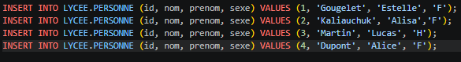
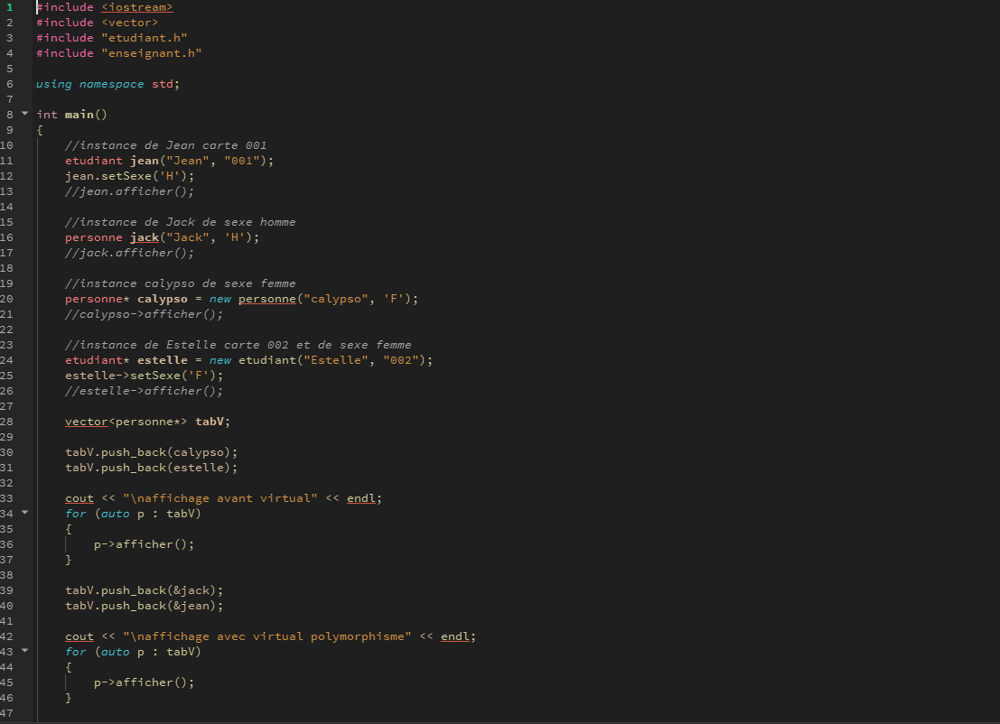

Étudiante BTS SIO — Option SLAM
Projet Lycée C++ - est un projet qui programmé sur Qt Creator en faisant des tests unitaires. Il exécute les messages en tests pour voir si la personne x appelé (enregistrés dans la bdd) apparait bien dans ce message.
elle contient les informations sur des étudiantes, enseignants du lycée et sur des cours (une partie de code d'insértions des utilisateurs) :

Le logiciel a été programmé qu'en langage C++ et qui est lié avec la base de données
